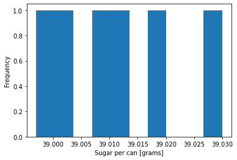
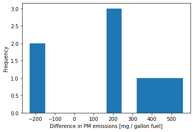

Flavors of Hypothesis Testing
Contents
12.6. Flavors of Hypothesis Testing#
# load libraries
import scipy.stats as stats
import numpy as np
import math
import matplotlib.pyplot as plt
12.6.1. Introduction#
There are many flavors of hypothesis testing. In this tutorial, we will explore the types of hypothesis testing you are most likely to encounter as an engineer. Our textbook, Navidi (2015), explores many more extensions. Remember, confidence intervals and hypothesis testings are conceptually very similar!
Problem Type |
Confidence Intervals |
Hypothesis Testing |
|---|---|---|
Large-Sample Population Mean |
§5.1 |
§6.1 |
Proportions |
§5.2 |
§6.3 |
Small-Sample Population Mean |
§5.3 |
§6.4 |
(Large-Sample) Difference Between Two Means |
§5.4 |
§6.5 |
Difference Between Two Proportions |
§5.5 |
§6.6 |
Small-Sample Difference Between Two Means |
§5.6 |
§6.7 |
Paired Data |
§5.7 |
§6.8 |
Large-Sample is code for “use z-statistic” and Small-Sample is code for “use t-statistic”.
12.6.2. Learning Objectives#
After studying this notebook, completing the activities, and reviewing the textbook, you should be able to:
Apply the five-step hypothesis testing method
Decide which test type and statistic to use based on the problem description
Check assumptions for the chosen statistical test
12.6.3. Small-Sample Test for Population Mean#
a.k.a. single-sample t-test
12.6.3.1. Motivating Example#
During your internships at Off-Brand Cola, Inc. this summer, you learn that a 12oz can of fizz has a sugar content specification of 38.98 - 39.02 grams. The manufacturing process is supposed to be calibrated so the mean sugar per can is 39.00 grams (otherwise the FDA gets upset), which is the center of the specification window. Six cans are randomly selected for inspection. There sugar contents are:
sugar = [39.030, 38.997, 39.012, 39.008, 39.019, 39.002]
Based on historical data, you are comfortable assuming the population distribution is normal.
Main Question Can you conclude the process needs recalibration?
We will now walk through the 5-step hypothesis testing procedure.
12.6.3.2. Step 1. Define Hypotheses.#
Let \(\mu\) denote the population mean.
12.6.3.3. Step 2. Assume \(H_0\) is True.#
12.6.3.4. Step 3. Compute the Test Statistic.#
We do not know the population standard deviation, so we will use a t-statistic.
Before we proceed with the calculation, we should check out dataset for outliers. We assumed the population distribution is normal, but we should still plot the sample to check.
# calculate sample mean and standard deviation
xbar = np.mean(sugar)
# ddof=1 uses the 1/(N-1) formula
# ddof=0 uses the 1/N formula (default)
# notice we are using numpy instead of pandas to compute standard deviation
s = np.std(sugar,ddof=1)
n = len(sugar)
print("Sample Mean:",xbar,"g")
print("Sample Standard Deviation:",s,"g")
Sample Mean: 39.01133333333333 g
Sample Standard Deviation: 0.011927559124425172 g
# plot histogram
plt.hist(sugar)
plt.xlabel("Sugar per can [grams]")
plt.ylabel("Frequency")
plt.show()

Interpretation: Six samples is fairly small. Although the largest value may look like an outlier, it is within two standard deviations of the sample mean which is not too uncommon by random chance.
We can now compute the test statistic:
tscore = (xbar - 39.00)/(s / math.sqrt(n))
print("t = ",tscore)
t = 2.3274572326112604
12.6.3.5. Step 4. Calculate P-Value.#
Store your answer in pvalue_a.
# Add your solution here
0.06742438341891084
# Removed autograder test. You may delete this cell.
12.6.3.6. Step 5. State Conclusions.#
You now need to interpret the results and state the conclusions. Because the calibration is fast and inexpensive, your team decide to use a significance level of \(\alpha=\) 7.5%.
Fill in the blank. Store your selection as a integer 1, 2, 3, or 4 in interpret_a.
Therefore, we __________.
Accept the null hypothesis.
Reject the null hypothesis.
Fail to reject the null hypothesis.
None of the above.
# Add your solution here
# Removed autograder test. You may delete this cell.
Should we recommend to recalibrate the machine? Store your answer as True or False in conclude_a.
# Add your solution here
# Removed autograder test. You may delete this cell.
12.6.4. Small-Sample Difference Between Two Means#
a.k.a. two-sample t-test
12.6.4.1. Motivating Example#
Consider the comparison of item recognition between two website designs. A sample of \(n_Y\) = 10 users using a conventional website design averaged \(\bar{Y} = \) 32.2 items identified, with a standard deviation of \(s_Y\) = 8.56. A separate sample of \(n_X\) = 10 users using a new website design averaged \(\bar{X}\) = 44.1 items identified, with a standard deviation of \(s_X\) = 10.09.
Can we conclude the mean number of items identified is greater with the new website design?
12.6.4.2. Step 1. Define Hypotheses.#
Let \(\mu_X\) and \(\mu_Y\) denote the population means for the new and old designs, respectively.
12.6.4.3. Step 2. Assume \(H_0\) is True.#
12.6.4.4. Step 3. Compute the Test Statistic.#
We do not know the population standard deviation, so we will use a t-statistic for the difference of means.
In order to use this test, we must assume both populations are normally distributed.
The degrees of freedom are:
# old website
ybar = 32.2
sy = 8.56
ny = 10
# new website
xbar = 44.1
sx = 10.09
nx = 10
t = (xbar - ybar - 0)/math.sqrt(sx**2/nx + sy**2/ny)
print("t = ",t)
t = 2.8439803014215195
Calculate the degrees of freedom (\(\nu\)). Store your answer in dof_b. Remember to round down.
# Add your solution here
print("Degrees of freedom:")
print(dof_b)
Degrees of freedom:
17.0
# Removed autograder test. You may delete this cell.
12.6.4.5. Step 4. Calculate the P-Value.#
Calculate the P-value. Store your result in pvalue_b.
# Add your solution here
print("P-value")
print(pvalue_b)
P-value
0.005607955797872655
# Removed autograder test. You may delete this cell.
12.6.4.6. Step 5. State Conclusions.#
The marketing team decides a priori to use a significance level of 5% to balance reward and costs.
Choose the best conclusion from the following:
Reject the null hypothesis. The old website has a higher mean number of items recognized.
Reject the null hypothesis. The new website has a higher mean number of items recognized.
Accept the null hypothesis. The old website has a higher mean number of items recognized.
Accept the null hypothesis. The new website has a higher mean number of items recognized.
Fail to reject the null hypothesis. The old website has a higher mean number of items recognized.
Fail to reject the null hypothesis. The new website has a higher mean number of items recognized.
Record your answer as an integer in conclude_b.
# Add your solution here
# Removed autograder test. You may delete this cell.
12.6.5. Small-Sample Different Between Pairwise Means#
a.k.a. paired t-test
12.6.5.1. Motivating Example#
Particulate matter (PM) emissions from automobiles cause serious environmental impacts. Eight vehicles were chosen at random from a fleet, and their emissions were measured under both highway and stop-and-go driving conditions. The difference, stop-and-go minus highway emissions, for each car were then computed. Below are the results in mg per gallon of fuel:
stop_go = np.array([1500, 870, 1120, 1250, 3460, 1110, 1120, 880])
highway = np.array([941, 456, 893, 1060, 3107, 1339, 1346, 644])
diff = stop_go - highway
print(diff)
[ 559 414 227 190 353 -229 -226 236]
The first element of each array are data from car 1, the second for car 2, etc.
Can we conclude that the mean level of emissions is less for highway driving than for stop-and-go driving?
12.6.5.2. Step 1. Define Hypotheses.#
We will treat the difference for each car as a single random variable: \(D\). Let \(\mu_D\) and \(\sigma_D\) represent the mean and standard deviation of the population distribution for the difference.
12.6.5.3. Step 2. Assume \(H_0\) is True.#
12.6.5.4. Step 3. Compute the Test Statistic.#
We do not know the population standard deviation, so we will use a t-statistic.
Notice this becomes a “vanilla” one-sample t-test after we take the difference.
Before we proceed with the calculation, we should check out dataset for outliers. We assumed the population distribution is normal, but we should still plot the sample to check.
# calculate sample mean and standard deviation
xbar = np.mean(diff)
# ddof=1 uses the 1/(N-1) formula
# ddof=0 uses the 1/N formula (default)
# some statistics textbooks strongly emphasize using 1/(N-1)
# we will not dwell on the different this semester and use them interchangably
# we will use ddof=1 to match the scanned figure below
s = np.std(diff,ddof=1)
n = len(diff)
print("Sample Mean:",xbar,"mg / gallon fuel")
print("Sample Standard Deviation:",s,"mg / gallon fuel")
Sample Mean: 190.5 mg / gallon fuel
Sample Standard Deviation: 284.1041056675226 mg / gallon fuel
# plot histogram
plt.hist(diff)
plt.xlabel("Difference in PM emissions [mg / gallon fuel]")
plt.ylabel("Frequency")
plt.show()

Interpretation: There are two cars with a negative difference. The remaining six have a positive difference. The two cars look like outliers. We will proceed with the hypothesis testing to offer a complete example, but we need to be extremely skeptical of the results. From an engineering perspective, we should investigate these two outliers further. This could give us new insights about PM emissions.
We will now compute the test statistic:
tscore = (xbar - 0)/(s / math.sqrt(n))
print("t = ",tscore)
t = 1.8965419946965025
12.6.5.5. Step 4. Calculate P-Value.#
Which graph below shows the correct shaded region for this hypothesis test?


Choices:
one-sided (left)
two-sided
one-sided (right)
none of these
Record your answer as an integer in sketch_c.
# Add your solution here
# Removed autograder test. You may delete this cell.
Now calculate the p-value. Store your answer in pvalue_c.
# Add your solution here
print("P-value:")
print(pvalue_c)
P-value:
0.049855871601833246
# Removed autograder test. You may delete this cell.
12.6.5.6. Step 5. State Conclusions.#
We will not interpret the P-value for this example because the sample contains likely outliers. This suggests the assumption that the population is normally distributed is violated, and thus we cannot apply the t-test.
Instead we recommend:
Investigate why two cars had a different trend than the other 2.
Take a larger sample. This would allow us to invoke the central limit theorem.
12.6.6. Population Proportion#
12.6.6.1. Motivating Example#
A supplier of semiconductor wafers claims that for all of the wafers they supply, no more than 10% are defective. We receive and test a sample of 400 wafers, and find 50 of them (\(\hat{p}\) = 50/400 = 12.5%) are defective. Can we conclude the supplier’s claim is false?
# proportion of tested waffers that are defective
# sample proportion
phat = 0.125
# sample size
n = 400
12.6.6.2. Step 1. Define Hypotheses.#
Let \(p\) represent the proportion of defective wafers in the population. If we assume the manufacturing of each wafer is independent, \(p\) is also the probability a single wafer is defective.
# null hypothesis proportion
p = 0.1
12.6.6.3. Step 2. Assume \(H_0\) is True.#
12.6.6.4. Step 3. Compute the Test Statistic.#
Recall \(\hat{p}\) is the sample proportion, which we will use to draw inferences about the population proportion \(p\).
If we assume wafers are sampled independently, we can use the large sample size to invoke the Central Limit Theorem:
Side note: We could model wafer production with the binomial distribution. With a large sample (many trials), the binomial distribution is closely approximated by the normal distribution.
The standard deviation of \(\hat{p}\), denoted \(\sigma_{\hat{p}}\) is calculated as follows:
We can now calculate the z-statistics:
s_phat = math.sqrt(p*(1-p)/n)
print("sigma_phat =",s_phat)
sigma_phat = 0.015000000000000001
z = (phat - p)/s_phat
print("z =",z)
z = 1.666666666666666
12.6.6.5. Step 4. Calculate P-Value.#
Calculate the P-value. Store your answer in pvalue_d.
# Add your solution here
print("P-value:")
print(pvalue_d)
P-value:
0.04779035227281481
# Removed autograder test. You may delete this cell.
12.6.6.6. Step 5. State Conclusions.#
Choose the best set of conclusions using an \(\alpha\) = 0.01 significance level:
Reject the null hypothesis. The claim is true.
Reject the null hypothesis. Based on the data, we cannot determine the claim is false.
Reject the null hypothesis. The claim is false.
Fail to reject the null hypothesis. The claim is true.
Fail to reject the null hypothesis. The claim is false.
Fail to reject the null hypothesis. Based on the data, we cannot determine the claim is false.
Accept the null hypothesis. The claim is true.
Accept the null hypothesis. The claim is false.
Accept the null hypothesis. Based on the data, we cannot determine the claim is false.
Record your selection as an integer in conclude_d.
# Add your solution here
# Removed autograder test. You may delete this cell.